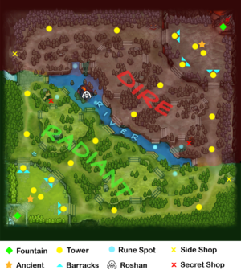

Data taken from OpenDota API found here: https://docs.opendota.com/

Dota 2 Quick Notes
- 5 versus 5 online game, "Radiant" vs "Dire"
- To win, one team must destroy all the towers in a lane (often all lanes) then destroy the enemy team's ancient
- Each player plays as one of the 117 heroes in Dota 2